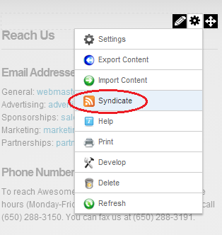
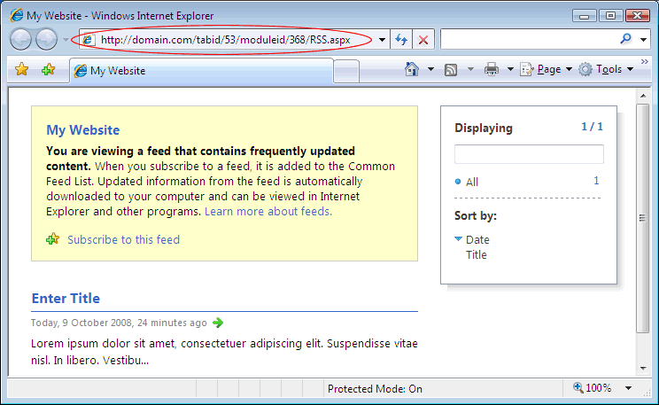
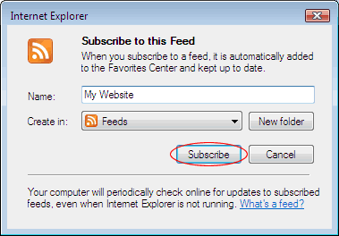

Subscribing to Syndicated Content
How to create an RSS feed of content. You can then subscribe to the feed and view it using Internet Explorer, or other RSS programs. This option may not be for all content.
Tip: Display syndicated content using the News Feeds (RSS) module.
- Select
 Syndicate from the module actions menu - OR - Click the Syndicate button (typically located in the bottom right corner of the module). This displays the XML code for the module content.
Syndicate from the module actions menu - OR - Click the Syndicate button (typically located in the bottom right corner of the module). This displays the XML code for the module content.

You can now do one of the following:
- Copy the URL from the Address bar of your Web browser and use as required.

- Click the Subscribe to this feed link and complete the Subscribe to this Feed dialog box.
